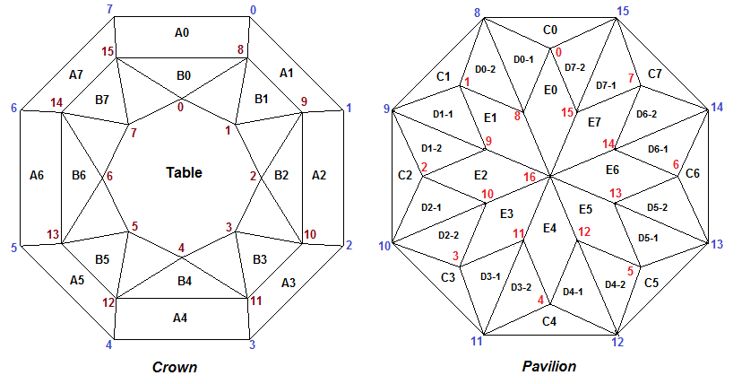

В данном разделе мы приступим к изучению работы с функциями библиотеки WebGeometry предназначенными
для работы в трехмерном пространстве. В WebGeometry для этих целей имеются классы Matrix3D,
Vector3D, Point3D, Line3D и Plane3D.
Начнем с создания модели многогранника, которому дадим название октагон (octagon).
Как известно в трехмерной графике все пространственные объекты представляются в конечном итоге набором треугольников. Поэтому, если грань объекта представляет собой многоугольник (у которого может быть различное число сторон), то путем триангуляции он разбивается на треугольники. Но перед тем как произвести триангуляцию, необходимо получить координаты вершин пространственных многоугольников, которые будут триангулированы. Для расчета этих кординат обычно расчитываются уравнения плоскостей в которых, лежат соответствующие многоугольники (грани), затем определяются точки пересечения этих плоскостей между собой и тем самым становятся известными координаты вершин многогранника. Иногда, для получения координат вершины многогранника используется способ, когда определяется точка пересечения некоторой характерной прямой с плоскостью в которой лежит грань модели. Только в некоторых случаях координаты вершин моделей задаются напрямую. Примером этого может служить рассмотренное нами построение огранки пирамида. При ее построении все координаты вершин были заданы вручную и вычислений при их определении не требовалось. Но обычно модели имеют достаточно сложную структуру и для расчета вершин используются методы аналитической геометрии. Библиотека WebGeometry и представляет собой набор этих методов представленных в виде функций на языке JavaScript.
Все основные моменты связанные с отображением в браузере 3D-модели и величин параметров будут сделаны также, как они были сделаны при создании модели пирамиды. В данном разделе мы сосредоточимся в основном на расчете значений координат вершин октагона.
По ссылке Octagon - Light Dispersion можно увидеть многогранник октагон отображенный при помощи кубических карт. При нажатии на приведенной по ссылке странице кнопки Inverse многогранник отобразится на черном фоне.
Перед тем как пристпить к созданию программы необходимо нарисовать либо на экране компьютера, либо на бумаге, вид модели при взгляде на нее сверху и снизу. При взгляде сверху мы будем видеть рисунок короны, а взгляде снизу - павильона. После того как определен внешний вид модели многогранника октагон необходимо пронумеровать ее вершины. Будем использовать два способа нумерации.
При первом - "сквозном" - способе все вершины нумеруются подряд от 0 до 48 (в октагоне 49 вершин). В дальнейшем будем придерживаться следующего правила для нумерации вершин огранок - первыми нумеруются вершины короны, затем нумеруются вершины рундиста и последними - вершины павильона. Нумерация идет сверху вниз - корона представляет собой верхнюю часть многогранника, рундист - среднюю и павильон - нижнюю часть. Отобразить сквозную нумерацию можно нажатием переключателя "All" на панели упраления программы.
При втором способе нумерации отдельно перечисляются вершины короны: 0 - 15, рундиста: 0 - 15 и павильона: 0 - 16. Этот способ нумерации мы будем в дальнейшем использовать в программе вычисления координат вершин octagon_verts.js. Он более наглядно смотрится в тексте программы, чем сквозной метод нумерации. Отобразить данную нумерацию вершин можно нажатием переключателя "Cr-Gd-Pav" на панели упраления программы.
Почему второй способ нумерации более удобен при создании программы? Предположим, что мы хотим определить уравнение плоскости,
в которой лежит грань павильона, по трем принадлежащим ей вершинам 30, 31 и 39.
Предположим, что координаты всех 49 вершин модели хранятся в некотором едином массиве all_verts.
Тогда создание плоскости
будет выглядеть следующим образом:
var plane = CreatePlaneThreePoints(all_verts[30], all_verts[31], all_verts[39]);
Если же под координаты вершин короны, рундиста и павильона выделены три отдельных вспомогательных
массива crown, girdle и pavil, то создание этой же плоскости примет вид:
var plane = CreatePlaneThreePoints(girdle[14], girdle[15], pavil[7]);
Это придает исходному коду гораздо более наглядный вид, так как мы сразу видим какие вершины и какой части модели
используются при нахождении уравнения данной плоскости. После завершения расчета координат всех вершин содержимое
массивов crown, girdle и pavil необходимо скопировать в массив vertices.
Заметим, на всякий случай, что массив vertices это вовсе не упомянутый выше массив all_verts.
Может показаться, что предварительное заполнение трех вспомогательных массивов является излишним, но на самом деле при создании сложных многогранников их присутствие делает разработку более наглядной. Нумерация вершин октагона при отдельном перечислении вершин короны, рундиста и павильона показана на приведенном рисунке. На корону наблюдатель смотрит сверху, а на павильон - снизу. В обоих случаях наблюдатель находится снаружи многогранника.
Заметим, что в последующих главах при изображении нумерации вершин павильона в большинстве случаев наблюдатель будет находиться "внутри" многогранника и "смотреть" на павильон сверху. В этом случае, при одновременном рассмотрении рисунков короны и павильона, достигается соответствие между вершинами короны и павильона. На приведенных ниже двух рисунках такого соответсвия нет, но зато есть соответствие между нумерацией вершин павильона при взгляде на него из online-программы и нумерацией этих же вершин на правом рисунке приведенном ниже.

Построение любой модели начинается с выбора ее параметров - создания структуры данных модели (СДМ). Введем в состав СДМ многогранника октагон следующие параметры:
var DEGREE = 0.01745329251994; // величина углового градуса
// Рундист
var lw = 1.0; // отношение длина/ширина
var r = 0.02; // высота рундиста
// при указанных значениях следующих двух параметров рундист принимает
// вид (приблизительно) равностороннего восьмиугольника
var corner_break_ratio = 0.55;
var corner_break_angle = 45*DEGREE;
// Корона
var hCrown = 0.16; // высота короны
var t = 0.3; // ширина площадки
var angle_B0 = 45*DEGREE; // верхний угол короны для передних (B0 и B4) и боковых ( B2 и B6) граней
var angle_B1 = 35*DEGREE; // верхний угол короны для всех угловых граней (B7, B3, B5 и B7)
var angle_A0 = 53*DEGREE; // нижний угол короны (одинаковый для всех граней A0 - A7)
var H2H = 0.5; // отношение высоты нижней части короны ко всей ее высоте
// Павильон
var hp = 0.62; // глубина павильона
var angle_C0 = 65*DEGREE; // угол наклона грани C0
var angle_C1 = 65*DEGREE; // угол наклона грани C1
var angle_C2 = 65*DEGREE; // угол наклона грани C2
var hLowerFacet = 0.5; // отношение высоты LowerFacet к hp
var hMiddleFacet = 0.2; // отношение высоты MiddleFacet к hp
Рундист многогранника октагон имеет следующий вид:length / width).СДМ (в том числе и многогранника октагон) можно задать отличающимися друг от друга способами с наличием или отсутствием в ней различных параметрами. Все зависит от того какие параметры модели мы хотим сделать настраиваемыми, а какие должны иметь постоянные значения. Также от того, какие параметры входят в СДМ зависит количество возможностей по настройке формы модели, способы ее построения (они могут радикально меняться даже при одной и той же СДМ, а при различных - тем более), сложность применяемых расчетов и т.п.
Расчет координат вершин граней модели начнем с рундиста огранки. Для хранения координат рундиста
используется массив girdle. Расчет координат будем производить в нормированных единицах измерения -
ширину рундиста (и, следовательно, всей модели) примем равным 1.0. Тогда длина рундиста (и всей модели)
будет равна lw · 1.0
Исходный текст функции InitGirdle определяющий координаты вершин рундиста является достаточно простым
и поэтому приведен без комментариев.
var girdle = [16]; // вспомогательный массив для хранения координат вершин рундиста
.........................
.........................
function InitGirdle()
{
var d1 = 0.5 * lw;
var d2 = 0.5;
var dy = corner_break_ratio/2;
var dx = dy * Math.tan(corner_break_angle);
girdle[0] = new Point3D( d1 - dx, d2, r/2);
girdle[1] = new Point3D( d1, d2 - dy, r/2);
girdle[2] = new Point3D( d1, - d2 + dy, r/2);
girdle[3] = new Point3D( d1 - dx, - d2, r/2);
girdle[4] = new Point3D( - d1 + dx, - d2, r/2);
girdle[5] = new Point3D( - d1, - d2 + dy, r/2);
girdle[6] = new Point3D( - d1, d2 - dy, r/2);
girdle[7] = new Point3D( - d1 + dx, d2, r/2);
girdle[8] = new Point3D( d1 - dx, d2, - r/2);
girdle[9] = new Point3D( d1, d2 - dy, - r/2);
girdle[10] = new Point3D( d1, - d2 + dy, - r/2);
girdle[11] = new Point3D( d1 - dx, - d2, - r/2);
girdle[12] = new Point3D( - d1 + dx, - d2, - r/2);
girdle[13] = new Point3D( - d1, - d2 + dy, - r/2);
girdle[14] = new Point3D( - d1, d2 - dy, - r/2);
girdle[15] = new Point3D( - d1 + dx, d2, - r/2);
}
Корона модели сотоит из граней расположенных на двух ярусах. Нижний ярус граней короны опирается на грани рундиста. К нему относятся (смотри рисунок с нумерацией вершин) грани A0, A1, A2, A3, A4, A5, A6 и A7. В верхний ярус входят грани B0, B1, - B7. Еще восемь граней верхнего яруса короны, которые мы назовем клиньями, примыкают к площадке модели многогранника (заметим, что в многограннике бриллиант, грани примыкающие к площадке, носят название грани звезды). Корона (и вся огранка в целом) в этом разделе обладает симметрией относительно плоскостей OXZ и OYZ. В следующих разделах мы построим модель октагона уже не обладающего симметрией относительно этих плоскостей.
Займемся определением координат вершин 8, 9, 10, 11, 12, 13, 14 и 15 короны.
Для этого создадим уравнения плоскостей в которых лежат грани A0, A1, - A7.
Для плоскости A0 это будет выглядеть следующим образом.
Сначала объявим переменную A0 которая потребуется в процессе создания уравнения плоскости:
var A0 = new Plane3D();
Затем непосредственно создадим плоскость A0 (грань 17) при помощи функции
CreateInclinePlane:
A0.CreateInclinePlane(angle_A0, girdle[7], girdle[0], girdle[7]);
Данная функция создает плоскость наклоненную относительно плоскости OXY на угол
angle_A0.
Второй и третий параметры функции (girdle[7] и girdle[0]) задают точки через которые
проходит ось вращения относительно которой будет повернута на угол angle_A0 плоскость
параллельная плоскости OXY. В этой функции, точки задающие ось поворота, должны
обязательно иметь одинаковые координаты по оси Z. Четвертый параметр функции задает
точку с координатами girdle[7] через которую обязательно проходит плоскость. Вершина с координатами
girdle[7] присутствует в вызове функции два раза, так как в общем случае ось вращения не обязательно
должна принадлежать создаваемой плоскости, а должна хотя бы быть параллельна ей.
Таким же способом при помощи функции CreateInclinePlane создаем плоскость A1 (грань 21):
var A1 = new Plane3D();
A1.CreateInclinePlane(angle_A0, girdle[0], girdle[1], girdle[0]);
Plane3D.prototype.CreateInclinePlane = function(angle, pt1, pt2, pt3)
{
var norm2d = new Vector2D(pt1[1] - pt2[1], pt2[0] - pt1[0]);
norm2d.Normer();
var x = Math.sin(angle) * norm2d[0];
var y = Math.sin(angle) * norm2d[1];
var z = Math.cos(angle);
var normPlaneVector = new Vector3D(x, y, z);
normPlaneVector.Normer();
this.CreatePlaneNormalVectorPoint(normPlaneVector, pt3);
this.Normer();
}
Сначала рассчитывается двумерный вектор norm2d определяемый точками pt1 и pt2.
После этого вычисляется 3D-вектор normPlaneVector, который имеет угол наклона
к горизонтальной плоскости OXY равный величине угла angle.
Проекции этого вектора на горизонтальную плоскость определяется вектором norm2d и синусом угла angle.
Вектор normPlaneVector принимается в качестве нормального вектора определяемой плоскости.
Этой плоскости принадлежит точка pt3. Следует учесть, что вектор normPlaneVector может быть повернут
на угол angle относительно вектора, соединяющего точки pt1 и pt2 двумя способами.
Эти два способа отличаются знаком значения величины угла (angle или -angle).
Если мы запишем следующее выражение:
A0.CreateInclinePlane(-angle_A0, girdle[7], girdle[0], girdle[7]);
то искомая плоскость повернется в другую сторону и корона будет построена неверно.
Если мы изменим направление вектора norm2d:
A0.CreateInclinePlane(angle_A0, girdle[0], girdle[7], girdle[7]);
то искомая плоскость также повернется в другую сторону и корона
также будет построена неверно.
Но если мы запишем такое выражение:
A0.CreateInclinePlane(-angle_A0, girdle[0], girdle[7], girdle[7]);
то построение короны теперь будет выполнено правильно.
При построении наклонных граней павидьона мы также воспользуемя функцией CreateInclinePlane,
но так как грани павильона наклонены в другую сторону относительно граней короны, то мы выберем
значение для параметра angle со знаком "-" (-angle).
Все приведенные замечания справедливы для функции Facet.
Отличие функции Facet от функции CreateInclinePlane заключается в том, что она создана
без помощи конструкции prototype и она возвращает значение соответствующее создаваемой плоскости.
Поэтому функцию Facet также можно использовать для построения наклонных плоскостей.
Например создание грани A0 будет выглядеть следующим образом:
var A0 = Facet(angle_A0, girdle[7], girdle[0], girdle[7]);
Обратим внимание на тот факт, что вершины короны 8, 9, 10, 11, 12, 13, 14 и 15
расположены на одной и той же высоте относительно плоскости OXY и поэтому они все лежат в
одной и той же горизонтальной плоскости параллельной OXY. Эта плоскость расположена на
высоте hCrown * H2H + r/2.
Создадим эту плоскость plane_CrownHor при помощи функции, которая вычисляет уравнение плоскости по ее направляющему вектору Z1 и
расстоянию от начала координат. Это расстояние равно, как нетрудно догадаться, величине hCrown * H2H + r/2.
var Z1 = new Vector3D(0, 0, 1);
var plane_CrownHor = new Plane3D();
plane_CrownHor.CreatePlaneNormalDistOXYZ(Z1, hCrown*H2H + r/2);
координаты точки пересечения трех плоскостей
A0, A7 и plane_CrownHor:
crown[8] = plane_CrownHor.IntersectionThreePlanes(A0, A1);
Координаты вершин короны 9, 10, 11, 12, 13, 14 и 15 можно определить тем же способом, что мы использовали
для нахождения координаты вершины 8 - путем нахождения точек пересечения соответствующих плоскостей.
crown[10] = new Point3D( crown[9][0], -crown[9][1], crown[9][2]);
crown[11] = new Point3D( crown[8][0], -crown[8][1], crown[8][2]);
crown[12] = new Point3D(-crown[8][0], -crown[8][1], crown[8][2]);
crown[13] = new Point3D( crown[9][0], -crown[9][1], crown[9][2]);
crown[14] = new Point3D(-crown[9][0], crown[9][1], crown[9][2]);
crown[15] = new Point3D(-crown[8][0], crown[8][1], crown[8][2]);
После того как расчитаны координаты всех вершин нижнего яруса короны, перейдем к определению координат вершин
0, 1, 2, 3, 4, 5, 6, 7 короны. Эти вершины лежат на плоскости на которой расположена площадка огранки.
Создаем эту плоскость:
var plane_Table = new Plane3D();
plane_Table.CreatePlaneNormalDistOXYZ(Z1, hCrown + r/2);
Затем расчитываем три наклоненные к горизонтали плоскости в которых лежат грани
B0, B1 и B2. Эти плоскости имеют углы наклона angle_B0, angle_B1 и angle_B0 соответственно:
var B0 = new Plane3D();
B0.CreateInclinePlane(angle_B0, crown[15], crown[8], crown[15]);
var B1 = new Plane3D();
B1.CreateInclinePlane(angle_B1, crown[8], crown[9], crown[8]);
var B2 = new Plane3D();
B2.CreateInclinePlane(angle_B0, crown[9], crown[10], crown[9]);
Далее создаем три вертикальные плоскости.
Рассчитываем вертикальную плоскость плоскость OYZ:
var OYZ = new Plane3D();
OYZ.CreatePlaneThreePoints(new Point3D(0,0,0), new Point3D(0,0,1), new Point3D(0,1,0));
Рассчитываем вертикальную плоскость OXZ:
var OXZ = new Plane3D();
OXZ.CreatePlaneThreePoints(new Point3D(0,0,0), new Point3D(0,0,1), new Point3D(1,0,0));
Создаем две 2D прямые являющиеся проекциями прямых gd0 - cr8 и gd1 - cr9 на плоскость OXY:
var ln1 = new Line2D(new Point2D(girdle[0][0], girdle[0][1]), new Point2D(crown[8][0], crown[8][1]));
var ln2 = new Line2D(new Point2D(girdle[1][0], girdle[1][1]), new Point2D(crown[9][0], crown[9][1]));
Определяем точку пересечения двумерных прямых:
var pt_cross = ln1.IntersectionTwoLines(ln2);
Создаем вертикальную плоскость проходящую через pt_cross и точку пересечения прямых gd0 - gd7 и gd1 - gd2.
Эта точка пересечения является по существу угловой точкой прямоугольника в который вписан рундист данной огранки - восьмиугольник.
var XY = new Plane3D();
XY.CreatePlaneThreePoints(new Point3D(pt_cross[0], pt_cross[1], 0),
new Point3D(pt_cross[0], pt_cross[1], 1),
new Point3D(0.5 * lw, 0.5, 0));
Вершины короны 0, 1 и 2 определяются как точки пересечения трех соответствующих плоскостей:
crown[0] = plane_Table.IntersectionThreePlanes(OYZ, B0);
Исходя из учета симметрии многогранника находим координаты остальных вершин короны:
crown[1] = plane_Table.IntersectionThreePlanes(XY, B1);
crown[2] = plane_Table.IntersectionThreePlanes(OXZ, B2);
crown[3] = new Point3D(crown[1][0], -crown[1][1], crown[1][2]);
crown[4] = new Point3D(crown[0][0], -crown[0][1], crown[0][2]);
crown[5] = new Point3D(-crown[3][0], crown[3][1], crown[3][2]);
crown[6] = new Point3D(-crown[2][0], crown[2][1], crown[2][2]);
crown[7] = new Point3D(-crown[1][0], crown[1][1], crown[1][2]);
Построение павильона, впрочем как и короны, во многом зависит от тех параметров входящих в СДО, которые относятся к этой части многогранника. Если выбрать набор этих параметров другим, то скорее всего способ построения претерпит изменения. В следующих частях мы рассмотрим еще три варианта построения павильона модели октагон, отличных от способа построения применяемого в данной части.
Прежде всего определим координаты калетты огранки. Значение ее координаты по оси Z равна сумме глубины
павильона hp и значения r/2 равного половине толщины рундиста:
pavil[16] = new Point3D(0, 0, -r/2 - hp);
Предполагаем, что модель многогранника симметрична относительно плоскостей OXZ и OYZ и поэтому соответствующие
значения координаты калетты по X и Y равны нулю.
Заметим, что для отрицательных значений координат Z при построении моделей многогранников
принято пользоваться термином глубина.
В СДО мы видим три параметра, которые определяют наклон восьми треугольных граней C0 - C7 примыкающих к рундисту
(в принципе, если предположить, что все эти восемь граней имеют один и тот же наклон, то можно было бы ограничиться всего одним параметром).
Так как предполагаем, что многогранник симметричен относительно плоскостей OXZ и OYZ, то нам достаточно ограничиться тремя гранями.
Построим три плоскости, наклоненные на углы angle_C0, angle_C1 и angle_C2 к плоскости OXY.
На них располагаются соответственно грани C0, C1 и C2:
var C0 = new Plane3D();
На глубине
C0.CreateInclinePlane(-angle_C0, girdle[15], girdle[8], girdle[8]);
var C1 = new Plane3D();
C1.CreateInclinePlane(-angle_C1, girdle[8], girdle[9], girdle[9]);
var C2 = new Plane3D();
C2.CreateInclinePlane(-angle_C2, girdle[9], girdle[10], girdle[10]);
-r/2 - hp * hMiddleFacet расположены вершины 0, 1, 2, 3, 4, 5, 6 павильона.
Глубину этих вершин в СДО задает параметр hLowerFacet. Поэтому для определения координат этих вешин создадим
горизонтальную плоскость, чья координата по оси Z определяется значением hLowerFacet:
var plane_MiddleFacet = new Plane3D();
Легко можно увидеть, что координаты вершин павильона 0, 1, и 2 находятся
как точки пересечения трех соответствующих плоскостей:
plane_MiddleFacet.CreatePlaneNormalDistOXYZ(Z1, -r/2 - hp * hMiddleFacet);
pavil[0] = plane_MiddleFacet.IntersectionThreePlanes(C0, OYZ);
Координаты вершин павильона 3, 4, 5, 6 определяются исходя из симметрии многогранника.
pavil[1] = plane_MiddleFacet.IntersectionThreePlanes(C1, XY);
pavil[2] = plane_MiddleFacet.IntersectionThreePlanes(C2, OXZ);
Посмотрим внимательно на чертеж павильона многогранника октагон. Мы видим, что для грани E0 уже найдены значения координат вершин павильона 0 и 16. Нетрудно понять, что для этой грани этим самым определен наклон к горизонтальной плоскости. Остается найти только насколько эта грань повернута относительно оси проходящей через вершины 0 и 16 этой грани. То же самое можно сказать и про грани E1 - E7. Вернемся к грани E0. Найдем нормальный вектор плоскости которой принадлежит эта грань. Создадим два вспомогательных вектора a0 и b0. Их векторное произведение определит нормальный вектор плоскости на которой лежит грань E0. В качестве вектора a0 возьмем вектор соответствующий отрезку от калетты до вершины 0 павильона. А в качестве вектора b0 возьмем вектор соответствующий отрезку от вершины 8 рундиста до вершины 15 рундиста. Фактически первый вектор определит наклон плоскости E0, а второй поворот E0 отностельно оси соединяющей вершины 0 и 16 павильона. Создадим плоскость в которой лежит грань E0 по ее нормальному вектору и вершине принадлежащей плоскости (вершина 0 или 16 павильона).
Таким же образом расчитаем плоскости в которых лежат грани E1 и E2. Затем создадим горизонтальную
плоскость plane_LowFacet на уровне вершин 8, 9, 10, 11, 12, 13, 14, 15 павильона.
Положение этой плоскости задается значением параметра hLowerFacet.
После этого найдем координаты вершины 8 павильона как координаты точки пересечения плоскостей
E0, E1 и plane_LowFacet, а вершины 9 как координаты точки пересечения плоскостей
E1, E2 и plane_LowFacet.
// Создаем два вектора a0 и b0. Их векторное произведение определит нормальный вектор плоскости E0. var a0 = new Vector3D(pavil[16][0] - pavil[0][0], pavil[16][1] - pavil[0][1], pavil[16][2] - pavil[0][2]); var b0 = new Vector3D(girdle[8][0] - girdle[15][0], girdle[8][1] - girdle[15][1], 0); var vec_E0 = a0.Cross(b0); // вектор перпендикулярный к плоскости E0 vec_E0.Normer(); var E0 = new Plane3D(); E0.CreatePlaneNormalVectorPoint(vec_E0, pavil[16]); // Создаем два вектора a1 и b1. Их векторное произведение определит нормальный вектор плоскости E1. var a1 = new Vector3D(pavil[16][0] - pavil[1][0], pavil[16][1] - pavil[1][1], pavil[16][2] - pavil[1][2]); var b1 = new Vector3D(girdle[9][0] - girdle[8][0], girdle[9][1] - girdle[8][1], 0); var vec_E1 = a1.Cross(b1); // вектор перпендикулярный к плоскости E1 vec_E1.Normer(); var E1 = new Plane3D(); E1.CreatePlaneNormalVectorPoint(vec_E1, pavil[16]); // Создаем два вектора a2 и b2. Их векторное произведение определит нормальный вектор плоскости E2. var a2 = new Vector3D(pavil[16][0] - pavil[2][0], pavil[16][1] - pavil[2][1], pavil[16][2] - pavil[2][2]); var b2 = new Vector3D(girdle[10][0] - girdle[9][0], girdle[10][1] - girdle[9][1], 0);; var vec_E2 = a2.Cross(b2); // вектор перпендикулярный к плоскости E2 vec_E2.Normer(); var E2 = new Plane3D(); E2.CreatePlaneNormalVectorPoint(vec_E2, pavil[16]); // горизонтальная плоскость на уровне вершин 8, 9, 10, 11, 12, 13, 14, 15 павильона var plane_LowFacet = new Plane3D(); plane_LowFacet.CreatePlaneNormalDistOXYZ(Z1, - r/2 - hp * hLowerFacet); // Находим pav.8 как точку пересечения трех плоскостей. pavil[8] = plane_LowFacet.IntersectionThreePlanes(E0, E1); // Находим pav.9 как точку пересечения трех плоскостей. pavil[9] = plane_LowFacet.IntersectionThreePlanes(E2, E1);
Координаты вершин павильона 10, 11, 12, 13, 14, 15 определяются исходя из учета симметрии павильона.
На последнем этапе расчета координат вершин многогранника заполняется массив vertices
// В массиве vertices хранятся координаты (x, y, z) всех вершин многогранника подряд.
for(i = 0; i < 16; i++)
{
vertices.push(crown[i][0]);
vertices.push(crown[i][1]);
vertices.push(crown[i][2]);
}
for(i = 0; i < 16; i++)
{
vertices.push(girdle[i][0]);
vertices.push(girdle[i][1]);
vertices.push(girdle[i][2]);
}
for(i = 0; i < 17; i++)
{
vertices.push(pavil[i][0]);
vertices.push(pavil[i][1]);
vertices.push(pavil[i][2]);
}
В данном разделе мы построили корону и павильон модели многогранника буквально "в лоб". Отталкиваясь от рундиста создавали сответствующим образом наклоненные плоскости. Затем находили точки пересечения их между собой или с горизонтальными плоскостями и тем самым находили положение вершин модели. В следующих трех частях создадим еще три варианта модели огранки октагон используя несколько иные подходы к ее построению.